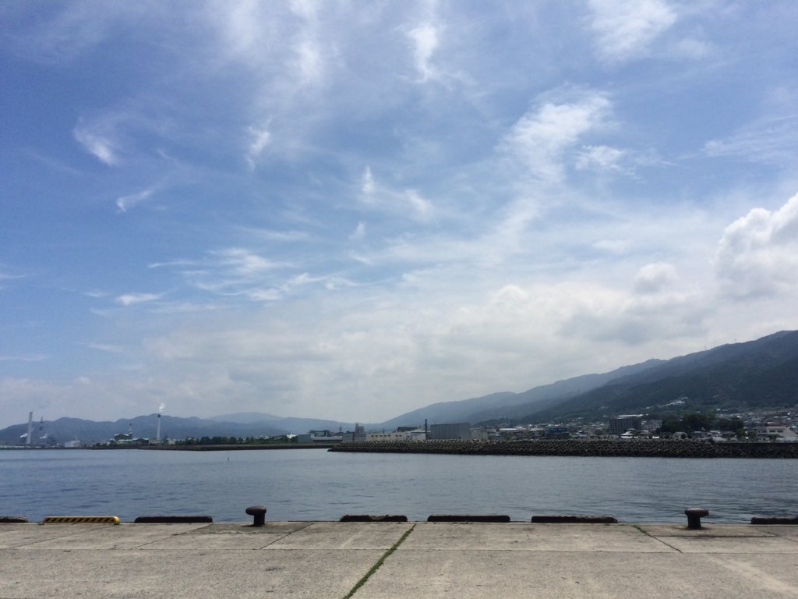
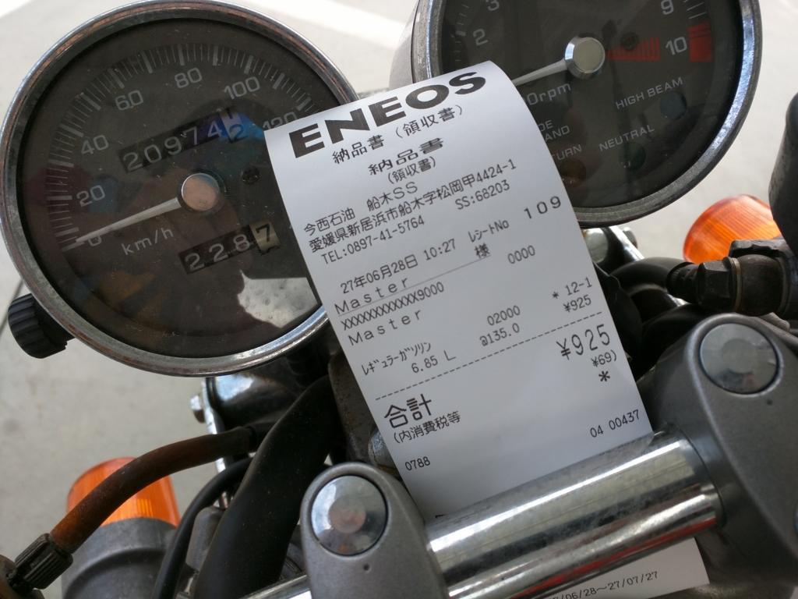
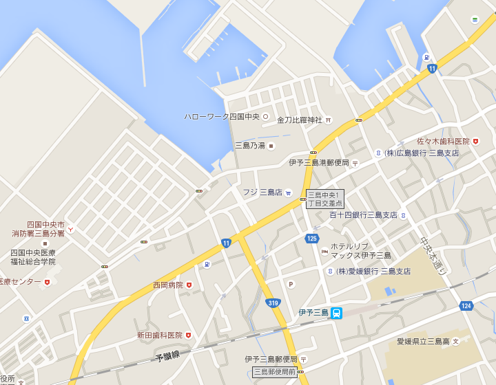
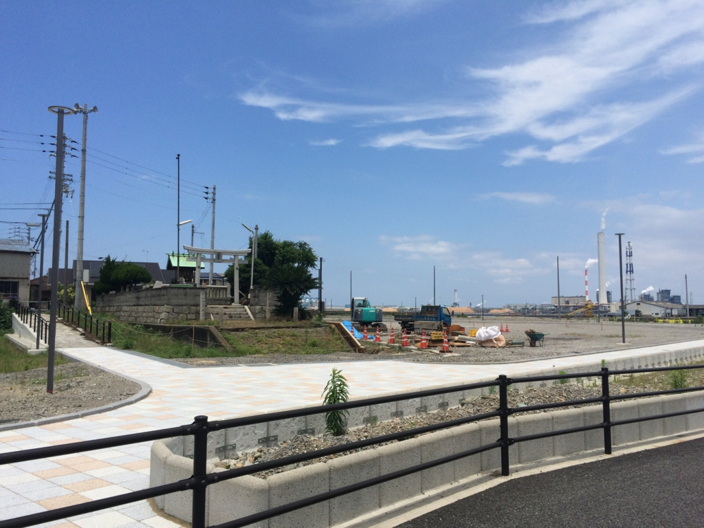
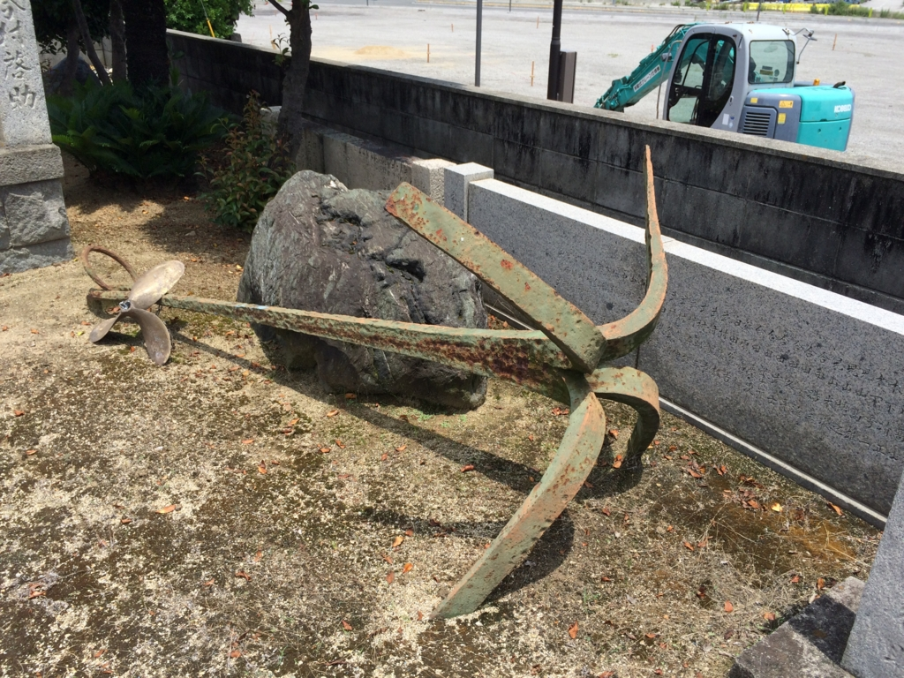
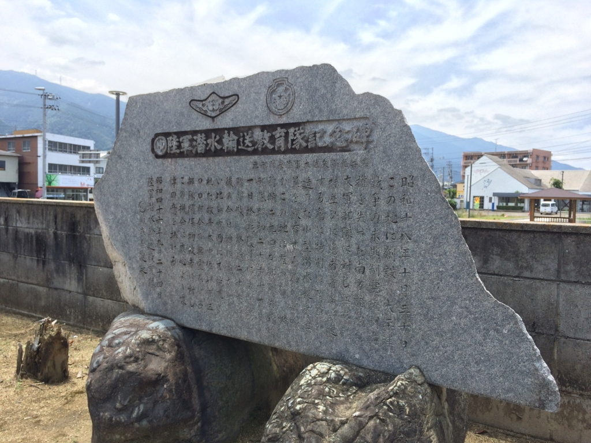

艦これ：伊予三島に「まるゆ」を訪ねる
公開日：

6月28日、晴れていたので久しぶりにバイクを引っ張り出した。相変わらず始動性の悪い子で、アイドリングがまったく安定せず、油断するとすぐにエンストしてしまうが、10分ぐらい走ると調子がよくなる。いつものことなので気にはしない。

燃費は3回給油して、毎回33km/l程度。悪くない感じ。
目的地は伊予三島。陸軍の輸送潜航艇「まるゆ」の足跡をたどる。
潜航輸送艇「まるゆ」とは
「海軍がちゃんと物資を補給してくれねえからガダルカナル島で負けたじゃねえか！」と激おこプンプン丸の陸軍が“決戦兵器”として極秘開発（潜望鏡はどうしても開発できなかったので、しぶしぶ海軍に調達をお願いしたので最終的にはバレた）した“潜航輸送艇”。輸送艦ごときが“決戦兵器”とはちょっと悲しいが、後期型は肉弾戦要員を運ぶことも視野に入れられて開発されており、そういった意味ではまさに“決戦兵器”だった。
まるゆが運べるのは米24トン、これは陸軍将兵2万人の一日分の食糧にあたる量です。
— 海軍の提案に反対するまるゆbot (@Antinavy_maruyu) 2015年6月28日
全長41.4m、水上排水量274トン、水上出力400馬力、水上速力10ノット（水中速力4.4ノット）、潜航深度100m、積載量24トン（お米換算）あるいは兵員40名を搭載可能。
この「まるゆ」の部隊が置かれていたのが伊予三島で、前に読んだ本によると、終戦時の規模は将校407人、准士官・下士官823人、兵2244人の計3474人。およそ戦時編成の1個連隊規模の兵力（？）が駐屯していたことになる。所属する「まるゆ」は16隻。

部隊の本部は「伊予三島駅から海岸へ向かう大通りの先にあった富士紡績工場を接収した建物」に置かれていたとのこと（昭和17年（1942）3月から休業*1）。正確な場所はよくわからないけれど、フジ三島店あたりなのかもしれない。
艦内神社というほどではないですけど、まるゆの中には金比羅様のお札をおまつりしている艇もありました。
— 海軍の提案に反対するまるゆbot (@Antinavy_maruyu) 2015年7月5日
まるゆでは艦内神社として金毘羅さんを祀っていたそうで、地元の金毘羅神社にはまるゆの教育隊を記念した石碑が建っている。



三島の地は終戦間際を除いて空襲に遭うこともなく、割とのんびりした雰囲気だったようだ。「気温温暖な美しい海辺の町で、海岸には見事な松林が続き、丸い玉砂利の砂浜があり、伊予蜜柑がどこの家にもたわわに実っていて、滞在中は珍しいので思いきり食べまくった」「東京から疎開していた女の子親子に誘われ、三島劇場で旅回り劇団の舞台芸を数回見物したが、なんの娯楽のない時世であったので結構楽しかった」地元としても、いきなり秘密の大部隊が駐屯してきたわけで、興味津々であったようだ。当初は地元の漁船とのトラブルもあったようだが（なんせ陸軍部隊でもあり、教官に至るまで操船はズブの素人なのである！）、漁船の操舵室の横に大きな番号を付けて識別し、教育隊の方も気を使うようになってからは、うまく付き合えるようになったとのことで、地元の人には「海軍さんが木のフネで、陸軍さんは鉄のフネ」などと囃されたという。こんな田舎だから、海軍の船といってもせいぜい民間から重用した木造漁船を改造した小型の警戒艇で、「まるゆ」の方がよっぽど立派だったのだ。